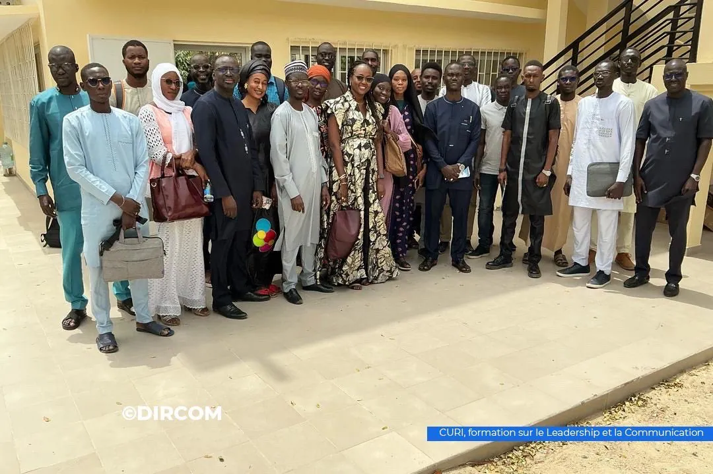

Photo à fournir
Pr Idrissa Sarr
Directeur du CURI, responsable du programme AFRETEC à l'UCAD

Direction, enseignants-chercheurs, équipe administrative et pôles du CURI.
Notre raison d'être

Le Centre Universitaire de Recherche et de Formation aux Technologies de l'Internet a été créé en février 2021 pour répondre au besoin de renforcement du capital humain dans le domaine du numérique, afin de soutenir le processus de transformation numérique du Sénégal.
Il forme chaque année plus de deux cents étudiants, en formation initiale comme en formation continue, et accompagne des publics plus larges lors de ses ateliers et de ses portes ouvertes.
Direction
Les noms et fonctions sont en cours de vérification auprès du centre avant publication.
Photo à fournir
Directeur du CURI, responsable du programme AFRETEC à l'UCAD
Photo à fournir
Direction des études
Photo à fournir
Responsable administratif
Photo à fournir
Responsable NIC Sénégal
Encadrement
Le centre réunit des enseignants-chercheurs de l'UCAD et des intervenants professionnels.
Photo à fournir
Développement web et mobile
Photo à fournir
Technologie web et multimédia
Photo à fournir
E-commerce et marketing digital
Photo à fournir
Réseaux et noms de domaine
Avant de publier une photo ou un nom, demandez l'accord de la personne concernée. La marche à suivre est décrite dans le fichier README.md du dépôt.
Organisation
Leur description reste à compléter avec la direction.
Les trois spécialités en formation initiale, la formation continue et les sessions certifiantes.
La gestion du domaine national .sn, portée par NIC Sénégal pour le compte de l'UCAD depuis 1993.
Travaux et ateliers du centre, dont le laboratoire de réalité virtuelle et augmentée.
Écrivez au centre, votre message sera transmis à la bonne personne.